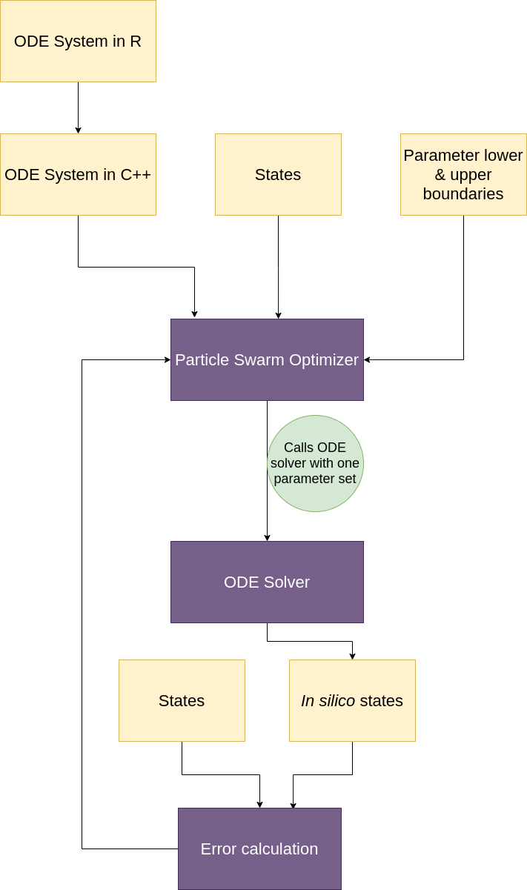
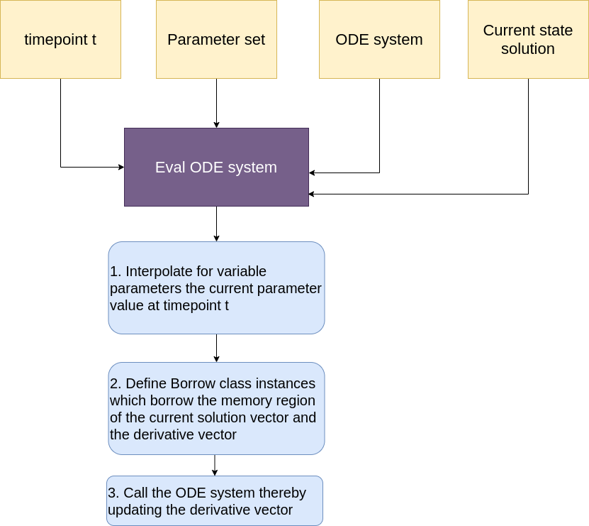
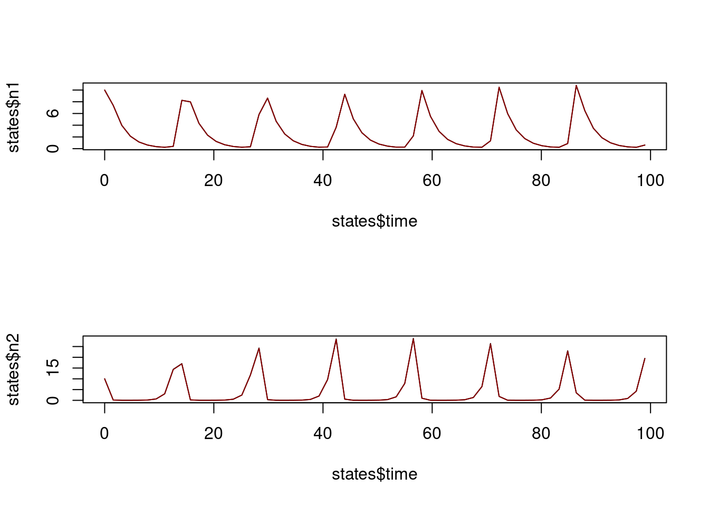

r <- function(a) {
c(a, rep(NA, 3))
}Introduction
Welcome to this tutorial on how to use the paropt package. This package is designed to optimize parameters of ODE systems, with the aim of matching the output of the in silico solution to previously measured states. The user supplies an ODE system in the form of an R function, and the information about states and parameters are passed on as data frames.
The workflow is illustrated in the following figure .
The Importance of ODE Systems as R Functions
In paropt, ODE systems are represented as R functions. This allows for a high level of flexibility and ease of use, as users can define their own ODE systems in a language they are familiar with.
The Translation Process: From R to C++
One of the key features of paropt is its ability to translate these R functions into C++ functions. The translation and compilation is done by the R package ast2ast. By converting the ODE systems into C++, paropt is able to take advantage of the performance benefits of C++,
The Role of Sundials in Solving ODE Systems
Once the ODE systems have been translated into C++, they are then solved using Sundials. Sundials is a suite of advanced solvers for ODE systems, and its use in paropt ensures accurate and efficient solutions.
Memory Management with ast2ast
One of the key features of ast2ast, which is used by paropt, is its efficient memory management. This is achieved through a class called Borrow. In typical programming scenarios, when Sundials calculates the current solution and its derivative, these values would need to be copied to another memory area for further use. This copying process can be time-consuming and inefficient. However, ast2ast uses the Borrow class to avoid this unnecessary copying. Instead of copying the values, Borrow simply “borrows” the memory area where these values are stored. This means that the current solution and its derivative can be accessed directly from where they are calculated, without the need for copying.
A Closer Look at One Call of the ODE System
To better understand how paropt works, let’s take a closer look at what happens during one call of the ODE system. This process is illustrated in the graph below:

First, if the parameters are variable, they are interpolated to get the current parameter value at the time point t. Next, instances of the Borrow class are created. As mentioned earlier, Borrow is a class in ast2ast that allows paropt to “borrow” the memory area where the current solution and its derivative are stored, instead of copying them to another memory area. This improves the performance of paropt by avoiding unnecessary memory copying. Finally, the ODE system is called with the current parameter values and the borrowed memory areas. The ODE system then calculates the derivatives which are stored directly in the borrowed memory areas. This process is repeated for each time point t, allowing paropt to solve the ODE system and optimize the parameters efficiently and effectively.
Using paropt in Practice
Let’s now look at a practical example of how to use paropt to optimize parameters of an ODE system. In this example, we have an ODE system with four parameters: a, b, c, and d. Parameters a, b, and c are constant, while d is variable. First, we define a helper function r that takes a single argument a and returns a vector with a as the first element and NA as the remaining three elements:
We then define the lower and upper bounds for the parameters at different time points. For the constant parameters a, b, and c, we use the helper function r to create a vector with the constant value and NA for the remaining elements. For the variable parameter d, we simply provide the value:
lb <- data.frame(time = c(0, 20, 60, 80),
a = r(0.8), b = r(0.3), c = r(0.09), d = 0.1)
ub <- data.frame(time = c(0, 20, 60, 80),
a = r(1.3), b = r(0.7), c = r(0.4), d = 0.6)Afterwards, we define the ODE system as an R function.
ode <- function(t, y, ydot, parameter) {
a_db = at(parameter, 1)
b_db = at(parameter, 2)
c_db = at(parameter, 3)
d_db = at(parameter, 4)
predator_db = at(y,1)
prey_db = at(y, 2)
ydot[1] = predator_db*prey_db*c_db - predator_db*d_db
ydot[2] = prey_db*a_db - prey_db*predator_db*b_db
}Before we call optimize we need to define the states of the ODE system.
path <- system.file("examples", package = "paropt")
states <- read.table(paste(path,"/states_LV.txt", sep = ""), header = TRUE)Next, we call the optimize function from paropt to optimize the parameters of the ODE system. We pass the ODE system, the lower and upper bounds, the relative and absolute tolerances for the ODE solver, the error tolerance for the optimizer, the population size and the number of generations for the PSO algorithm, and the states:
set.seed(1)
res <- paropt::optimize(ode,
lb = lb, ub = ub,
reltol = 1e-06, abstol = c(1e-08, 1e-08),
error = 0.0001,
npop = 40, ngen = 10000,
states = states)Finally, we plot the original states and the optimized states to visualize the results:
insilico <- res[[3]]
par(mfrow = c(2, 1))
plot(states$time, states$n1, type = "l")
points(insilico$time, insilico$n1, type = "l", col = "darkred")
plot(states$time, states$n2, type = "l")
points(insilico$time, insilico$n2, type = "l", col = "darkred")
This example shows how paropt can be used to optimize parameters of an ODE system efficiently and effectively. By defining the ODE system as an R function, translating it to C++, and using advanced techniques like memory borrowing and parallel computing, paropt provides a powerful tool for parameter optimization in ODE systems.
The Use of PSO in Parameter Optimization
To optimize the parameters of the ODE system, paropt uses a Particle Swarm Optimization (PSO) algorithm. This is a population-based stochastic optimization technique that is well-suited to this type of problem.
The Power of Parallel Computing in PSO
In addition to the performance improvements from using C++, paropt also leverages the power of parallel computing in its PSO algorithm. This means that the C++ functions can be called in parallel, further increasing the optimization speed. Notably, it is not possible to call R functions in parallel. At least not in the way it is done here as C++ operates on the bare metal and is not bound to the R interpreter.
The Unique Properties of PSO’s Arbitrary Random Neighborhood
One of the unique features of the PSO algorithm used in paropt is its use of an arbitrary random neighborhood. In 2018 Akman et al. showed that this approach is superior to other neighborhood topologies (Akman, Akman, and Schaefer (2018)). This allows for excellent exploration of the parameter space, as it avoids getting stuck in local optima. Notably, Akman described that their neighborhood is recalculated each time when the global best solution (best solution of the entire swarm) has not improved within one generation. Instead of using a fixed neighborhood, the neighborhood is recalculated every generation independently whether the global best solution has improved or not. Thereby, the exploration of the parameter space is even more increased.
References
Akman, Devin, Olcay Akman, and Elsa Schaefer. 2018. “Parameter Estimation in Ordinary Differential Equations Modeling via Particle Swarm Optimization.” Journal of Applied Mathematics 2018. https://doi.org/10.1155/2018/9160793.